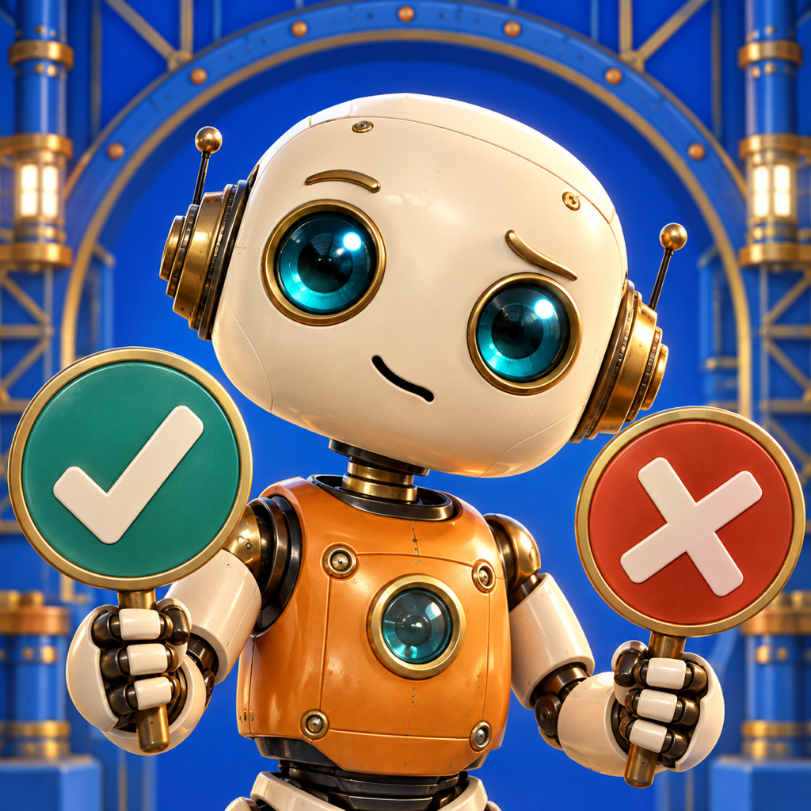

חדש ב־App Store · מרכז תמיכה
הרובוט המבולבל
מסע במפעל תלת־ממדי: עונים נכון או לא נכון, שומעים הסבר קצר ועוזרים לרובוט למצוא את הדרך.
מנוי חודשי פותח את כל העולמות. המחיר מוצג באפליקציה לפי חשבון ה־Apple שלכם.
תמיכה ב־iPhone וב־iPad. אפשר לפנות בעברית או באנגלית, ללא הרשמה.
לומדים, מגלים וממשיכים בדרך
משחק סקרנות לילדים: עונים על שאלות במדע, בטבע ובעולם, קוראים או שומעים הסבר קצר ומתקדמים בין אגפי המפעל. גם טעות היא הזדמנות ללמוד ולנסות שוב. בדרך אוספים מטבעות ומלבישים את הרובוט.
מנוי ושחזור
שני העולמות הראשונים פתוחים ללא תשלום. המנוי החודשי פותח את כל העולמות כל עוד הוא פעיל. המחיר, תקופת החיוב ותנאי החידוש שמוצגים באפליקציה מתקבלים ישירות מ־App Store בהתאם לאזור של חשבון Apple. רכישה קודמת בתשלום חד־פעמי של הרובוט נשמרת.
אפשר לבחור גם במנוי אחד לכל ארבע האפליקציות: דגלים, חשבון, אנגלית והרובוט. חשבון הורה, לבחירתכם, פותח אותו גם בשאר המשחקים.
לשחזור, התחברו לאותו חשבון Apple שבו נרכש המנוי ולחצו על ״שחזור רכישות״. ניתן לנהל או לבטל את המנוי בהגדרות חשבון Apple.
Game Center והישגים
התחברו ל־Game Center בהגדרות המכשיר. הישגים מוענקים על השלמת עולמות ועל מסעות מושלמים, והתקדמות שנצברה במצב לא מקוון עשויה להישלח לאחר החיבור.
תנאי שימוש ופרטיות
השימוש ברובוט המבולבל כפוף למסמכים החלים על כל משחקי הסולם.
עדיין צריכים עזרה?
שלחו את שם המשחק, דגם המכשיר, גרסת המערכת ותיאור קצר אל support.laddergames@gmail.com. אין לשלוח סיסמאות או פרטי תשלום.